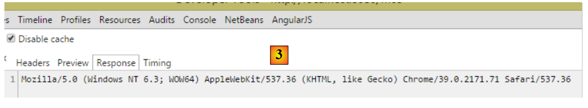
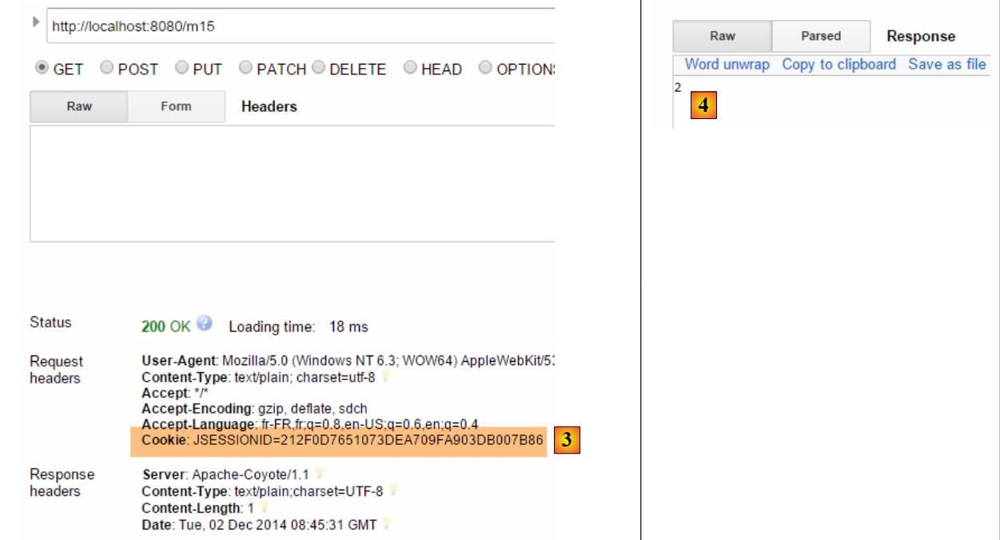
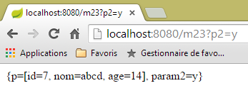
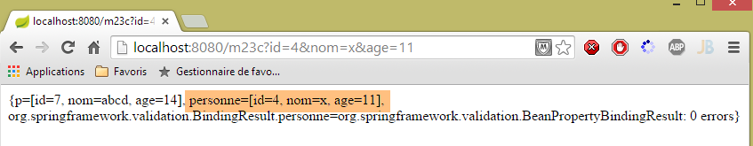
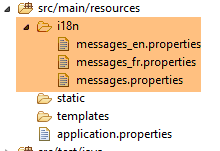
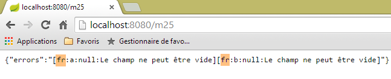
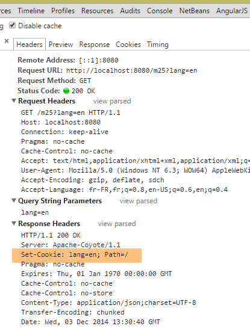
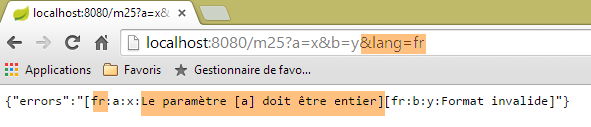
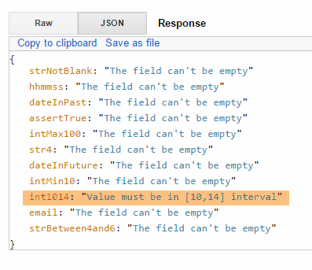

4. Aktionen: das Modell
Kehren wir zur Architektur einer Spring-Anwendung MVC zurück:
 |
Im vorigen Kapitel haben wir uns den Prozess angesehen, der die Anfrage [1] zum Controller und zur Aktion [2a] leitet, die sie verarbeiten werden – ein Mechanismus, der als Routing bezeichnet wird. Außerdem haben wir die verschiedenen Antworten vorgestellt, die eine Aktion an den Browser zurückgeben kann. Bisher haben wir Aktionen vorgestellt, die die ihnen übermittelte Anfrage nicht weiterverarbeitet haben. Eine Anfrage [1] enthält verschiedene Informationen, die Spring MVC der Aktion in Form eines Modells [2a] zur Verfügung stellt. Dieser Begriff ist nicht zu verwechseln mit dem Modell M einer Ansicht V [2c], die von der Aktion erzeugt wird:
 |
- Die Anfrage HTTP des Kunden geht in [1] ein;
- in [2] werden die in der Anfrage enthaltenen Informationen in die Aktionsvorlage [3] umgewandelt – häufig, aber nicht zwangsläufig eine Klasse –, die als Eingabe für die Aktion [4] dient;
- In [4] generiert die Aktion anhand dieses Modells eine Antwort. Diese besteht aus zwei Komponenten: einer Ansicht V [6] und dem Modell M dieser Ansicht [5];
- Die Ansicht V [6] verwendet ihr Modell M [5], um die für den Kunden bestimmte Antwort HTTP zu generieren.
In der Vorlage MVC ist die Aktion [4] Teil des C (Controllers), die Vorlage der Ansicht [5] ist das M und die Ansicht [6] ist das V.
In diesem Kapitel werden die Mechanismen der Verknüpfung zwischen den in der Anfrage übermittelten Informationen, bei denen es sich naturgemäß um Zeichenfolgen handelt, und dem Aktionsmodell, das eine Klasse mit Eigenschaften verschiedener Typen sein kann, behandelt.
Hinweis: Der Begriff „[Modèle d'action]“ ist kein gültiger Begriff.
Wir erstellen einen neuen Controller für diese neuen Aktionen:
 |
Der Controller [ActionModelController] sieht vorerst wie folgt aus:
package istia.st.springmvc.controllers;
import org.springframework.web.bind.annotation.RestController;
@RestController
public class ActionModelController {
}
- Zeile 5: Zur Erinnerung: Die Annotation [@RestController] bewirkt, dass die an den Client gesendete Antwort die als Zeichenkette serialisierte Ausgabe der Controller-Aktionen ist;
4.1. [/m01]: Parameter eines GET
Wir fügen die folgende Aktion [/m01] hinzu:
// ----------------------- Abrufen von Parametern mit GET------------------------
@RequestMapping(value = "/m01", method = RequestMethod.GET, produces = "text/plain;charset=UTF-8")
public String m01(String nom, String age) {
return String.format("Hello [%s-%s]!, Greetings from Spring Boot!", nom, age);
}
- Zeile 4: Die Aktion akzeptiert zwei Parameter mit den Namen [nom] und [age]. Sie werden mit Parametern initialisiert, die dieselben Namen in der Anfrage HTTP GET tragen;
In Chrome [1-3] ergeben sich folgende Ergebnisse:
 |
- in [1] die Abfrage GET mit den Parametern [nom] und [age];
- in [3] sieht man, dass die Aktion [/m01] diese Parameter tatsächlich abgerufen hat;
4.2. [/m02]: Parameter einer Aktion POST
Wir fügen die folgende Aktion [/m02] hinzu:
// ----------------------- Abrufen von Parametern mit POST------------------------
@RequestMapping(value = "/m02", method = RequestMethod.POST, produces = "text/plain;charset=UTF-8")
public String m02(String nom, String age) {
return String.format("Hello [%s-%s]!, Greetings from Spring Boot!", nom, age);
}
- Zeile 4: Die Aktion akzeptiert zwei Parameter mit den Namen [nom] und [age]. Sie werden mit Parametern initialisiert, die dieselben Namen in der Abfrage HTTP POST tragen;
Die Ergebnisse mit [Advanced rest Client] lauten wie folgt:
 |
- in [1-3] die Abfrage POST mit den Parametern [nom] und [age];
- in [4-5] wird der Header HTTP [Content-Type] der Anfrage POST festgelegt. Er muss [Content-Type: application/x-www-form-urlencoded] lauten;
- In [6] enthält [Form Data] die Liste der Parameter einer Operation POST. Hier sind die Parameter [nom] und [age] zu sehen;
- in [7] die Antwort des Servers, die zeigt, dass die Aktion [/m02] die Parameter [nom] und [age] erfolgreich abgerufen hat; ;
4.3. [/m03]: Parameter mit denselben Namen
In Abschnitt 2.5.2.8 haben wir gesehen, dass die Mehrfachauswahlliste Parameter mit identischen Namen an den Server senden kann. Sehen wir uns nun an, wie eine Aktion diese abrufen kann. Wir fügen die folgende Aktion [/m03] hinzu:
// ----------------------- Parameter mit denselben Namen abrufen-----------------
@RequestMapping(value = "/m03", method = RequestMethod.POST, produces = "text/plain;charset=UTF-8")
public String m03(String nom[]) {
return String.format("Hello [%s]!, Greetings from Spring Boot!", String.join("-", nom));
}
- Zeile 2: Die Aktion akzeptiert einen Parameter namens [name[]]. Er wird hier mit allen Parametern dieses Namens initialisiert, unabhängig davon, ob sie in einem GET oder einem POST vorkommen, da hier der Typ der Anfrage nicht angegeben wurde;
Die Ergebnisse lauten wie folgt:
 |
- Über ein POST und ein [1] werden die Parameter eines [2] gesendet;
- es werden ebenfalls Parameter in die URL und [3] eingefügt;
- in [4] befinden sich die vier Parameter mit dem gleichen Namen wie in [nom]: [Query String parameters] sind die Parameter von URL, [Form Data] sind die übermittelten Parameter;
- in [5] ist zu sehen, dass die Aktion [/m03] die vier Parameter mit den Namen [nom] abgerufen hat;
4.4. [/m04]: Zuordnung der Parameter der Aktion zu einem Java-Objekt
Nehmen wir folgende neue Aktion [/m04]:
// ------ Parameter einem Objekt (Command Object) zuordnen ---------------
@RequestMapping(value = "/m04", method = RequestMethod.POST)
public Personne m04(Personne personne) {
return person;
}
- Zeile 3: Die Aktion hat als Parameter eine Person des folgenden Typs:
public class Personne {
// ID
private Integer id;
// Name
private String nom;
// Alter
private int age;
....
// Getter und Setter
...
}
- Um den Parameter [Personne personne] zu erstellen, erstellt Spring MVC zunächst ein [new Personne()];
- gibt es anschließend Parameter, die die Namen der Felder [id, nom, age] des erstellten Objekts tragen, instanziiert es diese mit den Feldern über deren Setter;
- Zeile 4: Die Aktion gibt einen Typ [Personne] zurück, der daher in eine Zeichenkette serialisiert wird, bevor er an den Client gesendet wird. Wir haben gesehen, dass standardmäßig eine jSON-Serialisierung durchgeführt wird. Der Client sollte daher die Zeichenkette jSON für eine Person erhalten;
Hier ein Beispiel:
 |
- in [1], die Parameter [id, nom, age] zum Erstellen eines Objekts [Personne];
- in [2] die Zeichenfolge jSON dieser Person;
Was passiert, wenn nicht alle Felder einer Person gesendet werden? Probieren wir es aus:
 |
- in [2], nur der Parameter [id] wurde initialisiert;
4.5. [/m05]: Elemente aus einem URL abrufen
Nehmen wir folgende neue Aktion [/m05] an:
// ----------------------- Elemente aus dem URL abrufen ------------------------
@RequestMapping(value = "/m05/{a}/x/{b}", method = RequestMethod.GET)
public Map<String, String> m05(@PathVariable("a") String a, @PathVariable("b") String b) {
Map<String, String> map = new HashMap<String, String>();
map.put("a", a);
map.put("b", b);
return map;
}
- Zeile 2: Die verarbeitete URL hat die Form [/m05/{a}/x/{b}], wobei {param} ein Parameterelement der URL ist;
- Zeile 3: Die Parameterelemente von URL werden mit der Anmerkung [@PathVariable] abgerufen;
- Zeilen 4–6: Die abgerufenen Elemente [a] und [b] werden in ein Wörterbuch aufgenommen;
- Zeile 7: Die Antwort ist die Zeichenkette jSON aus diesem Wörterbuch;
Die Ergebnisse lauten wie folgt:
 |
4.6. [/m06]: Elemente aus URL und Parameter abrufen
Nehmen wir folgende neue Aktion [/m06] an:
// -------- Elemente aus dem URL und Parameter abrufen---------------
@RequestMapping(value = "/m06/{a}/x/{b}", method = RequestMethod.GET)
public Map<String, Object> m06(@PathVariable("a") Integer a, @PathVariable("b") Double b, Double c) {
Map<String, Object> map = new HashMap<String, Object>();
map.put("a", a);
map.put("b", b);
map.put("c", c);
return map;
}
- Zeile 3: Es werden sowohl Elemente aus URL und [Integer a, Double b] als auch ein Parameter (GET oder POST) aus [Double c] abgerufen;
- Zeilen 4–7: Diese Elemente werden in ein Wörterbuch aufgenommen;
- Zeile 8: Dies bildet die Antwort des Clients, der somit die Zeichenfolge jSON aus diesem Wörterbuch erhält;
Hier sind die Ergebnisse:
 |
Beachten Sie den Schrägstrich am Ende des Pfads [http://localhost:8080/m06/100/x/200.43/]. Ohne ihn erhält man das folgende falsche Ergebnis:
 |
4.7. [/m07]: Zugriff auf die gesamte Abfrage
Nehmen wir folgende neue Aktion [/m07]:
// ------ Zugriff auf die Abfrage HttpServletRequest ------------------------
@RequestMapping(value = "/m07", method = RequestMethod.GET, produces = "text/plain;charset=UTF-8")
public String m07(HttpServletRequest request) {
// die Kopfzeilen von HTTP
Enumeration<String> headerNames = request.getHeaderNames();
StringBuffer buffer = new StringBuffer();
while (headerNames.hasMoreElements()) {
String name = headerNames.nextElement();
buffer.append(String.format("%s : %s\n", name, request.getHeader(name)));
}
return buffer.toString();
}
- Zeile 3: Wir weisen Spring MVC an, das Objekt [HttpServletRequest request] einzubinden, das alle Informationen enthält, die wir über die Anfrage erhalten können;
- Zeilen 5–10: Alle Header HTTP der Anfrage werden abgerufen und zu einer Zeichenkette zusammengefügt, die an den Client gesendet wird (Zeile 11);
Die Ergebnisse lauten wie folgt:
 |
- in [1], die Kopfzeilen HTTP der Abfrage;
 |
- in [2], die Antwort. Dort sind tatsächlich alle Header HTTP der Anfrage enthalten.
4.8. [/m08]: Zugriff auf das Objekt [Writer]
Betrachten wir die folgende Aktion:
// ----------------------- Writer-Injektion ------------------------
@RequestMapping(value = "/m08", method = RequestMethod.GET)
public void m08(Writer writer) throws IOException {
writer.write("Bonjour le monde !");
}
- Zeile 3: Spring MVC injiziert das Objekt [Writer writer], mit dem in den Antwortstrom an den Client geschrieben werden kann;
- Zeile 3: Die Aktion gibt einen Typ [void] zurück, was bedeutet, dass sie die Antwort an den Kunden selbst erstellen muss;
- Zeile 4: Einfügen eines Textes in den Antwortstrom an den Kunden;
Die Ergebnisse lauten wie folgt:
 |
- Bei [2] ist zu erkennen, dass der Header HTTP [Content-Type] nicht gesendet wurde;
- in [3] die Antwort;
4.9. [/m09]: Zugriff auf einen Header HTTP
Betrachten wir die folgende Aktion:
// ----------------------- RequestHeader-Injektion ------------------------
@RequestMapping(value = "/m09", method = RequestMethod.GET)
public String m09(@RequestHeader("User-Agent") String userAgent) {
return userAgent;
}
- Zeile 3: Mit der Anmerkung [@RequestHeader("User-Agent")] kann der Header HTTP [User-Agent] abgerufen werden;
- Zeile 4: Der Text dieser Kopfzeile wird ausgegeben;
Die Ergebnisse lauten wie folgt:
 |
- in [2] die Kopfzeile HTTP [User-Agent];
 |
- in [3], die Aktion [/m08] hat diesen Header korrekt abgerufen;
4.10. [/m10, /m11]: Auf ein Cookie zugreifen
Ein Cookie ist in der Regel ein Header HTTP, den der:
- Server zunächst an den Client sendet;
- der Client anschließend systematisch an den Server zurücksendet;
Erstellen wir zunächst eine Aktion, die das Cookie anlegt:
// ----------------------- Cookie-Erstellung ------------------------
@RequestMapping(value = "/m10", method = RequestMethod.GET)
public void m10(HttpServletResponse response) {
response.addCookie(new Cookie("cookie1", "remember me"));
}
- Zeile 3: Wir fügen das Objekt [HttpServletResponse response] ein, um die vollständige Kontrolle über die Antwort zu haben;
- Zeile 4: Wir erstellen ein Cookie mit dem Schlüssel [cookie1] und dem Wert [remember me] (Hinweis: Zeichen mit Akzenten im Wert eines Cookies führen zu Fehlern);
- Zeile 3: Die Aktion gibt nichts zurück. Außerdem schreibt sie nichts in den Antworttext. Der Client erhält also ein leeres Dokument. Die Antwort wird lediglich dazu verwendet, den Cookie-Header HTTP hinzuzufügen;
Sehen wir uns die Ergebnisse an:
 |
- in [1]: die Anfrage;
- in [2]: Die Antwort ist leer;
- in [3]: das durch die Aktion erstellte Cookie;
Erstellen wir nun eine Aktion, um dieses Cookie abzurufen, das der Browser fortan bei jeder Anfrage sendet:
// ----------------------- Cookie-Injektion ------------------------
@RequestMapping(value = "/m11", method = RequestMethod.GET)
public String m10(@CookieValue("cookie1") String cookie1) {
return cookie1;
}
- Zeile 3: Mit der Anmerkung [@CookieValue("cookie1")] wird das Cookie mit dem Schlüssel [cookie1] abgerufen;
- Zeile 4: Dieser Wert wird als Antwort an den Client zurückgegeben;
Sehen wir uns die Ergebnisse an:
 |
- Bei [2] ist zu sehen, dass der Browser das Cookie zurücksendet;
- Bei [3] hat die Aktion das Cookie erfolgreich abgerufen;
4.11. [/m12]: Zugriff auf den Hauptteil von POST
Die übermittelten Parameter werden üblicherweise von dem Header HTTP [Content-Type: application/x-www-form-urlencoded] begleitet. Man kann auf die gesamte übermittelte Zeichenkette zugreifen. Wir erstellen die folgende Aktion:
// ----------- Abrufen des Hauptteils eines POST vom Typ „String“------------------------
@RequestMapping(value = "/m12", method = RequestMethod.POST)
public String m12(@RequestBody String requestBody) {
return requestBody;
}
- Zeile 3: Mit der Anmerkung [@RequestBody] lässt sich der Hauptteil von POST abrufen. Hier wird angenommen, dass dieser vom Typ [String] ist;
- Zeile 4: Dieser Hauptteil wird an den Client zurückgesendet;
Hier ein erstes Beispiel:
 |
- in [2], die gebuchten Werte;
- in [3], der Header HTTP [Content-Type] der Anfrage;
- in [4] die Antwort des Servers;
Die übermittelten Parameter haben nicht immer die einfache Form [p1=v1&p2=v2], die wir bisher oft verwendet haben. Betrachten wir einen komplexeren Fall:
 |
- in [2-3]: Die übermittelten Werte werden in der Form [clé:value] eingegeben;
- in [5], die übermittelte Zeichenfolge;
Beim Typ [Content-Type: application/x-www-form-urlencoded] muss die übermittelte Zeichenfolge die Form [p1=v1&p2=v2] haben. Wenn man beliebige Daten übermitteln möchte, wählt man den Typ [Content-Type: text/plain]. Hier ein Beispiel:
 |
- Bei [2-3] wird der Header HTTP [Content-Type] erstellt. Standardmäßig ist [5] definiert; dieser wird anstelle des in [6] definierten verwendet. Das Attribut [charset=utf-8] ist wichtig. Ohne dieses Attribut gehen die Akzentzeichen der gesendeten Zeichenfolge verloren;
- in [4] wird die gesendete Zeichenfolge korrekt in [7] wiederhergestellt;
4.12. [/m13, /m14]: Abrufen von in jSON übermittelten Werten
Es ist möglich, Parameter mit dem Header HTTP [Content-Type: application/json] zu übermitteln. Wir erstellen die folgende Aktion:
// ----------------------- Abrufen des Inhalts „jSON“ aus einem „POST“
@RequestMapping(value = "/m13", method = RequestMethod.POST, consumes = "application/json")
public String m13(@RequestBody Personne personne) {
return personne.toString();
}
- Zeile 2: [consumes = "application/json"] gibt an, dass die Aktion einen Körper vom Typ jSON erwartet;
- Zeile 3: [@RequestBody] repräsentiert diesen Körper. Diese Annotation wurde einem Objekt vom Typ [Personne] zugeordnet. Der Körper jSON wird automatisch in dieses Objekt deserialisiert;
- Zeile 4: Die Methode [Personne].toString() wird verwendet, um einen Wert zurückzugeben, der nicht der gesendeten Zeichenkette jSON entspricht;
Hier ein Beispiel:
 |
- in [2], die gesendete Zeichenfolge jSON;
- in [3], das [Content-Type] aus der Anfrage;
- in [4], die Antwort des Servers;
Man kann das auch anders machen:
// ----------------------- Den Textkörper „jSON“ eines POST abrufen 2 -------------------
@RequestMapping(value = "/m14", method = RequestMethod.POST, consumes = "text/plain")
public String m14(@RequestBody String requestBody) throws JsonParseException, JsonMappingException, IOException {
Personne personne = new ObjectMapper().readValue(requestBody, Personne.class);
return personne.toString();
}
- Zeile 2: Es wurde angegeben, dass die Methode einen Datenstrom vom Typ [text/plain] erwartet. Spring MVC verarbeitet dann den Request-Body als Typ [String] (Zeile 3);
- Zeile 4: Die Zeichenkette jSON wird in ein Objekt vom Typ [Personne] deserialisiert (siehe Abschnitt 9.7, Seite 543);
Die Ergebnisse lauten wie folgt:
 |
- zu [3], muss jedoch [text/plain] lauten;
4.13. [/m15]: Sitzung abrufen
Kommen wir noch einmal auf die Ausführungsarchitektur einer Aktion zurück:
 |
Die Controller-Klasse wird zu Beginn der Client-Anfrage instanziiert und am Ende derselben wieder freigegeben. Daher kann sie nicht dazu dienen, Daten zwischen zwei Anfragen zu speichern, selbst wenn sie wiederholt aufgerufen wird. Man möchte möglicherweise zwei Arten von Daten speichern:
- Daten, die von allen Benutzern der Webanwendung gemeinsam genutzt werden. Dabei handelt es sich in der Regel um schreibgeschützte Daten;
- Daten, die von den Anfragen desselben Clients gemeinsam genutzt werden. Diese Daten werden in einem Objekt namens „Session“ gespeichert. Man spricht dann von einer Client-Session, um den Speicher des Clients zu bezeichnen. Alle Anfragen eines Clients haben Zugriff auf diese Session. Sie können dort Informationen speichern und auslesen.
 |
Oben zeigen wir die Speichertypen, auf die eine Aktion Zugriff hat:
- den Anwendungsspeicher, der meist schreibgeschützte Daten enthält und für alle Benutzer zugänglich ist;
- den Speicher eines bestimmten Benutzers, auch Sitzung genannt, der Lese-/Schreibdaten enthält und auf den aufeinanderfolgende Anfragen desselben Benutzers zugreifen können;
- Obwohl oben nicht dargestellt, gibt es einen Anforderungsspeicher oder Anforderungskontext. Die Anforderung eines Benutzers kann von mehreren aufeinanderfolgenden Aktionen verarbeitet werden. Der Anforderungskontext ermöglicht es einer Aktion 1, Informationen an eine Aktion 2 weiterzugeben.
Betrachten wir ein erstes Beispiel, das diese verschiedenen Speicher verdeutlicht:
// ----------------------- Sitzung abrufen ------------------------
@RequestMapping(value = "/m15", method = RequestMethod.GET, produces = "text/plain;charset=UTF-8")
public String m15(HttpSession session) {
// Das Schlüsselobjekt [compteur] wird aus der Sitzung abgerufen
Object objCompteur = session.getAttribute("compteur");
// Es wird in eine Ganzzahl umgewandelt, um es zu inkrementieren
int iCompteur = objCompteur == null ? 0 : (Integer) objCompteur;
iCompteur++;
// es wird wieder in die Sitzung zurückgesetzt
session.setAttribute("compteur", iCompteur);
// Es wird als Ergebnis der Aktion zurückgegeben
return String.valueOf(iCompteur);
}
Spring MVC verwaltet die Sitzung des Benutzers in einem Objekt vom Typ [HttpSession].
- Zeile 3: Spring MVC wird aufgefordert, das Objekt [HttpSession] in die Parameter der Aktion einzufügen;
- Zeile 5: Aus diesen wird ein Attribut namens [compteur] abgerufen. Eine Sitzung verhält sich wie ein Wörterbuch, eine Sammlung von Schlüssel-Wert-Paaren [clé, valeur]. Wenn der Schlüssel [compteur] in der Sitzung nicht vorhanden ist, wird ein Zeiger null abgerufen;
- Zeile 7: Der dem Schlüssel [compteur] zugeordnete Wert ist vom Typ [Integer];
- Zeile 8: Inkrementierung des Zählers;
- Zeile 10: Aktualisierung des Zählers in der Sitzung;
- Zeile 12: Der Wert des Zählers wird an den Client gesendet;
Wenn [/m15] zum:
- erstes Mal ausgeführt wird, hat der Zähler in Zeile 12 den Wert 1;
- beim zweiten Mal wird in Zeile 5 dieser Wert 1 abgerufen und auf 2 gesetzt;
- ...
Hier ein Ausführungsbeispiel:
 |
- Bei „[1]“ erhält man tatsächlich den ersten Wert des Zählers;
- Bei [2] hat der Server ein Sitzungs-Cookie gesendet. Es hat den Schlüssel [JSESSIONID] und als Wert eine für jeden Benutzer eindeutige Zeichenfolge. Wir erinnern uns, dass der Browser die empfangenen Cookies systematisch zurücksendet. Wenn wir also die Aktion [/m15] ein zweites Mal anfordern, sendet der Client dieses Cookie zurück, wodurch der Server ihn wiedererkennen und seiner Sitzung zuordnen kann. Auf diese Weise wird die Erinnerung an den Benutzer aufrechterhalten;
Betrachten wir nun die zweite Anfrage:
 |
- In [3] sehen wir, dass der Client das Sitzungs-Cookie zurücksendet. Es fällt auf, dass dieses Sitzungs-Cookie in der Antwort des Servers nicht mehr enthalten ist. Nun ist es der Client, der es sendet, um erkannt zu werden;
- in [4], der zweite Wert des Zählers. Er wurde tatsächlich erhöht;
4.14. [/m16]: Abrufen eines Objekts mit dem Scope [session]
Man möchte möglicherweise alle Daten der Sitzung eines Benutzers in ein einziges Objekt packen und nur dieses in die Sitzung aufnehmen. Wir verfolgen diesen Ansatz. Wir fügen den Zähler in das folgende Objekt [SessionModel] ein:
 |
package istia.st.sprinmvc.models;
import org.springframework.context.annotation.Scope;
import org.springframework.context.annotation.ScopedProxyMode;
import org.springframework.stereotype.Component;
@Component
@Scope(value = "session", proxyMode = ScopedProxyMode.TARGET_CLASS)
public class SessionModel {
private int compteur;
public int getCompteur() {
return compteur;
}
public void setCompteur(int compteur) {
this.compteur = compteur;
}
}
- Zeile 7: Die Annotation [@Component] ist eine Spring-Annotation (Zeile 5), die die Klasse [SessionModel] zu einer Komponente macht, deren Lebenszyklus von Spring verwaltet wird;
- Zeile 8: Die Annotation [@Scope(value = "session", proxyMode = ScopedProxyMode.TARGET_CLASS)] ist ebenfalls eine Spring-Annotation (Zeilen 3–4). Wenn Spring auf MVC stößt, wird die entsprechende Klasse erstellt und in die Sitzung des Benutzers aufgenommen. Das Attribut [proxyMode = ScopedProxyMode.TARGET_CLASS] ist wichtig. Dank ihm erstellt Spring MVC eine Instanz pro Benutzer und nicht eine einzige Instanz für alle Benutzer (Singleton);
- Zeile 11: der Zähler;
Damit diese neue Spring-Komponente erkannt wird, muss die Konfiguration der Anwendung in der Klasse [Application] überprüft werden:
package istia.st.springmvc.main;
import org.springframework.boot.SpringApplication;
import org.springframework.boot.autoconfigure.EnableAutoConfiguration;
import org.springframework.context.annotation.ComponentScan;
import org.springframework.context.annotation.Configuration;
@Configuration
@ComponentScan({"istia.st.springmvc.controllers"})
@EnableAutoConfiguration
public class Application {
public static void main(String[] args) {
SpringApplication.run(Application.class, args);
}
}
- Zeile 9: Die Spring-Komponenten werden im Paket [istia.st.springmvc.controllers] gesucht. Das reicht nicht mehr aus. Wir passen diese Zeile wie folgt an:
@ComponentScan({ "istia.st.springmvc.controllers", "istia.st.springmvc.models" })
Wir haben das Paket hinzugefügt, in dem sich die Klasse [SessionModel] befindet.
Nun fügen wir die folgende Aktion hinzu:
@Autowired
private SessionModel session;
// ------ Verwaltung eines Objekts im Sitzungsbereich (Scope) [Autowired] -----------
@RequestMapping(value = "/m16", method = RequestMethod.GET, produces = "text/plain;charset=UTF-8")
public String m16() {
session.setCompteur(session.getCompteur() + 1);
return String.valueOf(session.getCompteur());
}
- Zeilen 1–2: Die Spring-Komponente [SessionModel] wird als [@Autowired] in den Controller injiziert. An dieser Stelle sei daran erinnert, dass ein Spring-Controller ein Singleton ist. Es erscheint daher paradox, eine Komponente mit geringerem Gültigkeitsbereich – in diesem Fall [Session] – in ihn zu injizieren. Hier kommt die Annotation [@Scope(value = "session", proxyMode = ScopedProxyMode.TARGET_CLASS)] der Komponente [SessionModel] ins Spiel. Jedes Mal, wenn der Controller-Code auf das Feld [session] in Zeile 2 zugreift, wird eine Proxy-Methode ausgeführt, um die Sitzung der Anfrage bereitzustellen, die gerade vom Controller verarbeitet wird;
- Zeile 6: Das Objekt [HttpSession] wird in den Aktionsparametern nicht mehr benötigt;
- Zeile 7: Der Zähler wird abgerufen bzw. erhöht;
- Zeile 8: Der Wert wird zurückgegeben;
Hier ein Ausführungsbeispiel:
Beim ersten Mal
 |
Beim zweiten Mal
 |
Nehmen wir nun einen anderen Browser, der einen zweiten Nutzer darstellt. Wir verwenden hier den Opera-Browser:
 |
Oben in [1] erhält dieser zweite Nutzer einen Zählerwert von 1. Dies zeigt, dass seine Sitzung und die des ersten Nutzers unterschiedlich sind. Betrachtet man den Client-Server-Datenaustausch (auch in Opera mit Strg-Umschalt-I), so sieht man in [2], dass dieser zweite Nutzer ein anderes Sitzungs-Cookie hat als der erste Nutzer. Dies gewährleistet die Unabhängigkeit der Sitzungen.
4.15. [/m17]: Abrufen eines Objekts aus dem Gültigkeitsbereich von [application]
Kommen wir noch einmal auf die Ausführungsarchitektur einer Aktion zurück:
 |
Wir wissen, wie die Benutzersitzung aufgebaut wird. Nun erstellen wir ein Bereichsobjekt [application], dessen Inhalt schreibgeschützt und für alle Benutzer zugänglich ist. Wir führen die Klasse [ApplicationModel] ein, die das Bereichsobjekt [application] darstellt:
 |
package istia.st.springmvc.models;
import java.util.concurrent.atomic.AtomicLong;
import org.springframework.stereotype.Component;
@Component
public class ApplicationModel {
// Zähler
private AtomicLong compteur = new AtomicLong(0);
// Getter und Setter
public AtomicLong getCompteur() {
return compteur;
}
public void setCompteur(AtomicLong compteur) {
this.compteur = compteur;
}
}
- Zeile 5: Die Annotation [@Component] bewirkt, dass die Klasse [ApplicationModel] eine von Spring verwaltete Komponente ist. Der Standardtyp für Spring-Komponenten ist [singleton]: Die Komponente wird als Einzelinstanz erstellt, wenn der Spring-Container instanziiert wird, d. h. in der Regel beim Start der Anwendung. Wir können diesen Lebenszyklus nutzen, um im Singleton Konfigurationsinformationen zu speichern, auf die alle Benutzer zugreifen können;
- Zeile 11: ein Zähler vom Typ [AtomicLong]. Dieser Typ verfügt über eine sogenannte atomare Methode [incrementAndGet]. Das bedeutet, dass ein Thread, der diese Methode ausführt, sicher sein kann, dass kein anderer Thread den Wert des Zählers (Get) zwischen dessen Abfrage (Get) und dessen Inkrementierung (increment) durch den ersten Thread ausliest, was zu Fehlern führen würde, da zwei Threads denselben Wert des Zählers auslesen würden und dieser statt um zwei nur um eins inkrementiert würde;
Wir erstellen die folgende neue Aktion [/m17]:
@Autowired
private ApplicationModel application;
// ----- Verwaltung eines Objekts im Anwendungsbereich [Autowired] ------------------------
@RequestMapping(value = "/m17", method = RequestMethod.GET, produces = "text/plain;charset=UTF-8")
public String m17() {
return String.valueOf(application.getCompteur().incrementAndGet());
}
- Zeilen 1–2: Wir fügen die Komponente [ApplicationModel] in den Controller ein. Es handelt sich um ein Singleton. Daher verfügt jeder Benutzer über eine Referenz auf dasselbe Objekt;
- Zeile 7: Wir geben den Gültigkeitsbereichszähler [application] zurück, nachdem wir ihn erhöht haben;
Hier sind zwei Beispiele, eines mit Chrome, das andere mit Opera:
 |  |
Oben ist zu sehen, dass beide Browser mit demselben Zähler gearbeitet haben, was bei der Sitzung nicht der Fall war. Diese beiden Browser stehen für zwei verschiedene Benutzer, die beide Zugriff auf die Scope-Daten [application] haben. Generell sollte vermieden werden, Lese-/Schreibinformationen in Objekte des Gültigkeitsbereichs [application] zu speichern, wie es oben beim Zähler der Fall war. Denn die Ausführungsthreads der verschiedenen Benutzer greifen gleichzeitig auf die Daten des Gültigkeitsbereichs [application] zu. Wenn es schreibbare Informationen gibt, müssen die Schreibzugriffe synchronisiert werden, wie dies oben beim Typ [AtomicLong] geschehen ist. Parallelzugriffe sind eine Quelle für Programmierfehler. Daher sollte man in Objekten des Gültigkeitsbereichs [application] vorzugsweise nur schreibgeschützte Informationen ablegen.
4.16. [/m18]: Abrufen eines Objekts des Bereichs [session] mit [@SessionAttributes]
Es gibt eine weitere Möglichkeit, Informationen aus dem Bereich [session] abzurufen. Wir werden das folgende Objekt in die Sitzung aufnehmen:
package istia.st.springmvc.models;
public class Container {
// der Zähler
public int compteur=10;
// Getter und Setter
public int getCompteur() {
return compteur;
}
public void setCompteur(int compteur) {
this.compteur = compteur;
}
}
Wir werden dieses Objekt mit den beiden folgenden Aktionen verwenden:
// Verwendung von [@SessionAttribute] ----------------------
@RequestMapping(value = "/m18", method = RequestMethod.GET)
public void m18(HttpSession session) {
// Hier wird der Schlüssel [container] in die Sitzung eingefügt
session.setAttribute("container", new Container());
}
// Verwendung von [@ModelAttribute] ----------------------
// Der Schlüssel [container] der Sitzung wird hier eingefügt
@RequestMapping(value = "/m19", method = RequestMethod.GET)
public String m19(@ModelAttribute("container") Container container) {
container.setCompteur(1 + container.getCompteur());
return String.valueOf(container.getCompteur());
}
- Zeilen 3–6: Die Aktion [/m18] liefert kein Ergebnis. Sie dient lediglich dazu, ein Objekt in der Sitzung mit dem Schlüssel [container] anzulegen;
- Zeile 11: In der Aktion [/m19] wird die Annotation [@ModelAttribute] verwendet. Das Verhalten dieser Annotation ist recht komplex. Der Parameter [container] dieser Annotation kann verschiedene Dinge bezeichnen, insbesondere ein Objekt der Sitzung. Dazu muss dieses Objekt mit einer Annotation [@SessionAttributes] auf der Klasse selbst deklariert worden sein:
@RestController
@SessionAttributes({"container"})
public class ActionModelController {
- Die obige Zeile 2 bezeichnet den Schlüssel [container] als Teil der Attribute der Sitzung;
Zusammenfassend lässt sich sagen:
- In [/m18] wird der Schlüssel [container] in die Sitzung übernommen;
- die Annotation [@SessionAttributes({"container"})] bewirkt, dass dieser Schlüssel in einen mit [@ModelAttribute("container")] annotierten Parameter eingefügt werden kann;
- im folgenden Ausführungsbeispiel nicht sichtbar, aber eine mit [@ModelAttribute] annotierte Information ist automatisch Teil des Modells M, das an die Ansicht V übermittelt wird;
Hier ist ein Ausführungsbeispiel. Zunächst wird der Schlüssel [container] mit der Aktion [/m18] [1] in die Sitzung eingefügt. Anschließend wird die Aktion [/m19] zweimal aufgerufen, um zu sehen, wie sich der Zähler erhöht.
 |
4.17. [/m20-/m23]: Einfügen von Informationen mit [@ModelAttribute]
Betrachten wir die folgende neue Aktion:
// Das Attribut „p“ wird Teil aller Ansichtsvorlagen [Model] sein ----------------
@ModelAttribute("p")
public Personne getPersonne() {
return new Personne(7,"abcd", 14);
}
// ---------------Instanziierung von @ModelAttribute --------------------------
// wird eingefügt, wenn es in der Sitzung vorhanden ist
// wird eingefügt, wenn der Controller eine Methode für dieses Attribut definiert hat
// kann aus den Feldern von URL stammen, sofern ein Konverter von String zum Attributtyp vorhanden ist
// ansonsten wird es mit dem Standardkonstruktor erstellt
// Anschließend werden die Attribute des Modells mit den Parametern von GET oder POST initialisiert
// Das Endergebnis wird Teil des durch die Aktion erzeugten Modells sein
// Das Attribut „p“ wird in die Argumente eingefügt------------------------
@RequestMapping(value = "/m20", method = RequestMethod.GET)
public Personne m20(@ModelAttribute("p") Personne personne) {
return personne;
}
- Zeilen 2–5: Definieren ein Modellattribut namens [p]. Dabei handelt es sich um das Modell M einer Ansicht V, das in Spring durch den Typ [Model] dargestellt wird. Ein Modell verhält sich wie ein Schlüssel-Wert-Paar-Dictionary [clé, valeur]. Hier ist der Schlüssel [p] dem Objekt [Personne] zugeordnet, das durch die Methode [getPersonne] erstellt wurde. Der Name der Methode kann beliebig sein;
- Zeile 17: Das Schlüsselvorlagenattribut [p] wird in die Parameter der Aktion eingefügt. Diese Einfügung erfolgt gemäß den Regeln in den Zeilen 8–12. Hier liegt der in Zeile 9 definierte Fall vor. In Zeile 17 ist der Parameter [Personne personne] also das Objekt [Personne(7,'abcd',14)];
- Zeile 18: Das Objekt [personne] wird zur Überprüfung zurückgegeben. Dieses wird in jSON serialisiert, bevor es an den Client gesendet wird.
Hier ein Beispiel:
 |
Betrachten wir nun die folgende Aktion:
// --------- Das Attribut „p“ ist automatisch Teil der Vorlage M der Ansicht V
@RequestMapping(value = "/m21", method = RequestMethod.GET)
public String m21(Model model) {
return model.toString();
}
Eine Aktion, die eine Ansicht V anzeigen soll, muss das zugehörige Modell M erstellen. Spring MVC verwaltet dieses Modell mit einem Typ [Model], der in die Parameter der Aktion injiziert werden kann. Zu Beginn ist dieses Modell leer oder enthält die mit der Annotation [@ModelAttribute] markierten Informationen. Die Aktion ergänzt dieses Modell gegebenenfalls, bevor sie es an eine Ansicht übergibt.
- Zeile 3: Einfügen des Modells M;
- Zeile 4: Wir wollen sehen, was darin steht. Wir serialisieren es als Zeichenkette, um es an den Client zu senden. Hier wird die Methode [Personne.toString] verwendet. Sie muss also vorhanden sein;
Hier ein Ausführungsbeispiel:
 |
Oben sieht man, dass die Anweisungen:
@ModelAttribute("p")
public Personne getPersonne() {
return new Personne(7,"abcd", 14);
}
einen Eintrag [p, Personne(7,'abcd',14)] im Modell erstellt haben. Das ist immer der Fall.
Betrachten wir nun den folgenden Fall:
// ansonsten wird es mit dem Standardkonstruktor erstellt
// anschließend werden die Attribute des Modells mit den Parametern von GET oder POST initialisiert
mit der folgenden Aktion:
// --------- Das Modellattribut [param1] ist Teil des Modells, jedoch nicht initialisiert
@RequestMapping(value = "/m22", method = RequestMethod.GET)
public String m22(@ModelAttribute("param1") String p1, Model model) {
return model.toString();
}
- Zeile 3: Das Schlüsselmodellattribut [param1] existiert nicht. In diesem Fall muss der zugehörige Typ über einen Standardkonstruktor verfügen. Dies ist hier beim Typ [String] der Fall, aber man kann nicht [@ModelAttribute("param1") Integer p1] schreiben, da die Klasse [Integer] keinen Standardkonstruktor hat;
- Zeile 4: Das Modell wird zurückgegeben, um zu prüfen, ob das Schlüsselattribut [param1] tatsächlich Teil des Modells ist;
Hier ein Ausführungsbeispiel:
 |
Das Vorlagenattribut [param1] ist zwar in der Vorlage vorhanden, aber die Methode [toString] des zugehörigen Werts liefert keine Hinweise auf diesen Wert.
Betrachten wir nun die folgende Aktion, bei der wir explizit eine Information in das Modell einfügen:
// --------- Das Modellattribut [param2] wird explizit in das Modell aufgenommen
@RequestMapping(value = "/m23", method = RequestMethod.GET)
public String m23(String p2, Model model) {
model.addAttribute("param2",p2);
return model.toString();
}
- Zeile 4: Der in Zeile 3 abgerufene Wert [p2] wird in das Modell eingefügt und dem Schlüssel [param2] zugeordnet:
Hier ein Ausführungsbeispiel:
 |
Die Regeln ändern sich, wenn der Parameter der Aktion ein Objekt ist. Hier ein erstes Beispiel:
// ------ Das Modellattribut [unePersonne] wird automatisch in das Modell eingefügt
@RequestMapping(value = "/m23b", method = RequestMethod.GET)
public String m23b(@ModelAttribute("unePersonne") Personne p1, Model model) {
return model.toString();
}
Die Aktion nimmt keine Änderungen an der ihr übergebenen Vorlage vor. Das Ergebnis sieht wie folgt aus:
 |
Man sieht, dass die Annotation [@ModelAttribute("unePersonne") Personne p1] die Person [p1] in die Vorlage eingefügt hat, verknüpft mit dem Schlüssel [unePersonne].
Betrachten wir nun die folgende Aktion:
// --------- Die Person p1 wird automatisch in die Vorlage eingefügt
// -------- mit dem Namen ihrer Klasse als Schlüssel, wobei das erste Zeichen klein geschrieben ist
@RequestMapping(value = "/m23c", method = RequestMethod.GET)
public String m23c(Personne p1, Model model) {
return model.toString();
}
- Zeile 4: Die Anmerkung [@ModelAttribute] wurde nicht gesetzt;
Das Ergebnis lautet wie folgt:
 |
Es ist festzustellen, dass durch das Vorhandensein des Parameters [Personne p1] die Person [p1] in das Modell aufgenommen wurde, die mit dem Schlüssel [personne] verknüpft ist – dies ist der Name der Klasse [Personne] mit dem ersten Zeichen in Kleinbuchstaben.
4.18. [/m24]: Validierung des Aktionsmodells
Betrachten wir das folgende Aktionsmodell [ActionModel01]:
 |
package istia.st.springmvc.models;
import javax.validation.constraints.NotNull;
public class ActionModel01 {
// Daten
@NotNull
private Integer a;
@NotNull
private Double b;
// Getter und Setter
...
}
- Zeilen 8 und 9: Die Annotation [@NotNull] ist eine Validierungsbeschränkung, die angibt, dass die annotierten Daten nicht den Wert null annehmen dürfen;
Betrachten wir nun die folgende Aktion:
// ----------------------- Validierung eines Modells ------------------------
@RequestMapping(value = "/m24", method = RequestMethod.GET)
public Map<String, Object> m24(@Valid ActionModel01 data, BindingResult result) {
Map<String, Object> map = new HashMap<String, Object>();
// Fehler?
if (result.hasErrors()) {
StringBuffer buffer = new StringBuffer();
// Durchlaufen der Fehlerliste
for (FieldError error : result.getFieldErrors()) {
buffer.append(String.format("[%s:%s:%s:%s:%s]", error.getField(), error.getRejectedValue(),
String.join(" - ", error.getCodes()), error.getCode(),error.getDefaultMessage()));
}
map.put("errors", buffer.toString());
} else {
// Keine Fehler
Map<String, Object> mapData = new HashMap<String, Object>();
mapData.put("a", data.getA());
mapData.put("b", data.getB());
map.put("data", mapData);
}
return map;
}
- Zeile 3: Ein Objekt [ActionModel01] wird instanziiert und seine Felder [a, b] mit Parametern gleicher Namen initialisiert. Die Annotation [@Valid] gibt an, dass die Gültigkeitsbedingungen überprüft werden müssen. Die Ergebnisse dieser Prüfung werden in den Parameter vom Typ [BindingResult] (zweiter Parameter) geschrieben. Folgende Prüfungen finden statt:
- Aufgrund der Anmerkungen [@NotNull] müssen die Parameter [a] und [b] vorhanden sein;
- Aufgrund des Typs [Integer a] muss der Parameter [a], der von Natur aus vom Typ [String] ist, in einen Typ [Integer] konvertierbar sein;
- Aufgrund des Typs [Double b] muss der Parameter [b], der von Natur aus vom Typ [String] ist, in einen Typ [Double] konvertierbar sein;
Mit der Anmerkung [@Valid] werden Validierungsfehler in den Parameter [BindingResult result] übertragen. Ohne die Annotation [@Valid] führen Validierungsfehler zum Absturz der Aktion, und der Server sendet dem Client eine Antwort vom Typ HTTP mit dem Status 500 (Internal Server Error).
- Zeile 3: Das Ergebnis der Aktion ist vom Typ [Map]. Die Zeichenkette jSON aus diesem Ergebnis wird an den Client gesendet. Es werden zwei Arten von Wörterbüchern erstellt:
- im Falle eines Fehlers ein Wörterbuch mit dem Eintrag ['errors', value], wobei [value] eine Zeichenkette ist, die alle Fehler beschreibt (Zeile 13);
- im Erfolgsfall ein Wörterbuch mit einem Eintrag ['data',value], wobei [value] selbst ein Wörterbuch mit zwei Einträgen ist: ['a', value], ['b', value] (Zeile 19);
- Zeilen 9–12: Für jeden erkannten Fehler [error] wird die Zeichenkette [error.getField(), error.getRejectedValue(), error.Codes, error.getDefaultMessage()] gebildet:
- Das erste Element ist das fehlerhafte Feld, [a] oder [b],
- das zweite Element ist der abgelehnte Wert, zum Beispiel [x],
- das dritte Element ist eine Liste von Fehlercodes. Auf deren Bedeutung gehen wir gleich noch ein;
- das vierte Element ist der Fehlercode. Er ist Teil der vorherigen Liste;
- das letzte Element ist die Standardfehlermeldung. Es können nämlich mehrere Fehlermeldungen vorhanden sein;
Hier sind einige Ausführungsbeispiele:
 |
Oben sehen wir, dass:
- die Zuweisung von „x“ zum Feld [ActionModel01.a] fehlgeschlagen ist und die Fehlermeldung angibt, warum;
- Die Zuweisung von „y“ zum Feld [ActionModel01.b] ist fehlgeschlagen, und die Fehlermeldung gibt den Grund dafür an;
Beachten Sie die Fehlercodes für das Feld [a]: [typeMismatch.actionModel01.a - typeMismatch.a - typeMismatch.java.lang.Integer - typeMismatch]. Wir werden auf diese Fehlercodes zurückkommen, wenn es darum geht, die Fehlermeldung anzupassen. Beachten Sie, dass der Fehlercode [typeMismatch] lautet.
Ein weiteres Beispiel:
 |
Hier wurden die Parameter [a] und [b] nicht übergeben. Die Validatoren [@NotNull] des Aktionsmodells [ActionModel01] haben dann ihre Funktion erfüllt;
Endlich korrekte Werte:
 |
4.19. [m/24]: Anpassung der Fehlermeldungen
Kehren wir zu einem Screenshot aus dem vorherigen Beispiel zurück:
|
Oben sehen wir die Standard-Fehlermeldungen. Es ist klar, dass wir diese in einer echten Anwendung nicht beibehalten können. Es ist möglich, diese Fehlermeldungen anzupassen. Dazu nutzen wir die Fehlercodes. Oben sehen wir, dass der Fehler für das Feld [a] die folgenden Codes hat: [typeMismatch.actionModel01.a - typeMismatch.a - typeMismatch.java.lang.Integer - typeMismatch]. Diese Fehlercodes reichen vom genauesten zum ungenauesten:
- [typeMismatch.actionModel01.a]: Typfehler im Feld [a] vom Typ [ActionModel01];
- [typeMismatch.a]: Typfehler bei einem Feld mit dem Namen [a];
- [typeMismatch.java.lang.Integer]: Typfehler bei einem Integer-Typ;
- [typeMismatch]: Typfehler;
Es ist außerdem zu beachten, dass der Fehlercode für das Feld [a], das durch [error.getCode()] ermittelt wurde, [typeMismatch] lautet (siehe Screenshot oben).
Wir werden die Fehlermeldungen in eine Eigenschaftsdatei einfügen:
 |
Die oben genannte Datei [messages.properties] sieht dann wie folgt aus:
NotNull=Le champ ne peut être vide
typeMismatch=Format invalide
typeMismatch.model01.a=Le paramètre [a] doit être entier
Jede Zeile hat das folgende Format:
Hier ist der Schlüssel ein Fehlercode und die Meldung die diesem Code zugeordnete Fehlermeldung.
Zur Erinnerung: Die Fehlercodes für die beiden Felder lauten:
- [typeMismatch.actionModel01.a - typeMismatch.a - typeMismatch.java.lang.Integer - typeMismatch], wenn der Parameter [a] ungültig ist;
- [typeMismatch.actionModel01.b - typeMismatch.b - typeMismatch.java.lang.Double - typeMismatch:typeMismatch ], wenn der Parameter [b] ungültig ist;
- [NotNull.actionModel01.a - NotNull.a - NotNull.java.lang.Integer - NotNull], wenn der Parameter [a] fehlt;
- [NotNull.actionModel01.b - NotNull.b - NotNull.java.lang.Double - NotNull], wenn der Parameter [b] fehlt;
Die Datei [messages.properties] muss für alle möglichen Fehlerfälle eine Fehlermeldung enthalten. Für den Fall, dass
- die Parameter [a] und [b] fehlen, wird der Code [NotNull] verwendet;
- bei einem fehlerhaften Parameter [a] haben wir Meldungen für zwei Codes ([typeMismatch.actionModel01.a, typeMismatch]) hinterlegt. Wir werden sehen, welcher davon verwendet wird;
- Wenn der Parameter [b] falsch ist, wird der Code [typeMismatch] verwendet;
Damit die Datei [messages.properties] verwendet wird, muss Spring konfiguriert werden:
 |
Wir entfernen die Konfigurationsannotationen aus der Klasse [Application]:
package istia.st.springmvc.main;
import org.springframework.boot.SpringApplication;
public class Application {
public static void main(String[] args) {
SpringApplication.run(Config.class, args);
}
}
- Zeile 8: Die Spring-Boot-Anwendung wird gestartet. Der erste Parameter der statischen Methode [SpringApplication.run] ist die Klasse, die nun die Anwendung konfiguriert;
Die Klasse [Config] lautet wie folgt:
package istia.st.springmvc.main;
import org.springframework.boot.autoconfigure.EnableAutoConfiguration;
import org.springframework.context.MessageSource;
import org.springframework.context.annotation.Bean;
import org.springframework.context.annotation.ComponentScan;
import org.springframework.context.annotation.Configuration;
import org.springframework.context.support.ResourceBundleMessageSource;
import org.springframework.web.servlet.config.annotation.WebMvcConfigurerAdapter;
@Configuration
@ComponentScan({ "istia.st.springmvc.controllers", "istia.st.springmvc.models" })
@EnableAutoConfiguration
public class Config extends WebMvcConfigurerAdapter {
@Bean
public MessageSource messageSource() {
ResourceBundleMessageSource messageSource = new ResourceBundleMessageSource();
messageSource.setBasename("i18n/messages");
return messageSource;
}
}
- Zeilen 11–13: Hier finden sich die Konfigurationsannotationen, die zuvor in der Klasse [Application] enthalten waren;
- Zeile 14: Um eine Spring-Anwendung MVC zu konfigurieren, muss die Klasse [WebMvcConfigurerAdapter] erweitert werden;
- Zeile 15: Die Annotation [@Bean] definiert eine Spring-Komponente, ein Singleton;
- Zeile 16: Es wird ein Bean mit dem Namen [messageSource] (der Name der Methode) definiert. Dieser Bean dient zur Definition der Meldungsdateien der Anwendung und muss zwingend diesen Namen tragen;
- Zeilen 17–19: Weisen Spring an, dass sich die Nachrichtendatei:
- sich im Ordner „[i18n]“ im Classpath des Projekts befindet (Zeile 18),
- den Namen [messages.properties] trägt (Zeile 18). Tatsächlich ist der Begriff [messages] der Stamm der Namen der Meldungsdateien und nicht der Name selbst. Wir werden sehen, dass es im Rahmen der Internationalisierung mehrere Meldungsdateien geben kann, eine pro unterstützter Kultur. So kann es beispielsweise [messages_fr.properties] für die französische Sprache und [messages_en.properties] für die englische Sprache geben. Die an den Stamm [messages] angehängten Suffixe sind standardisiert. Man kann nicht einfach irgendetwas verwenden;
Im Projekt STS muss der Ordner [i18n] in den Ressourcenordner kopiert werden, da dieser in den Classpath des Projekts aufgenommen wird:
 |
Um diese Datei zu nutzen, erstellen wir die folgende neue Aktion:
// Validierung eines Modells, Verwaltung von Fehlermeldungen ------------------------
@RequestMapping(value = "/m25", method = RequestMethod.GET)
public Map<String, Object> m25(@Valid ActionModel01 data, BindingResult result, HttpServletRequest request)
throws Exception {
// das Ergebniswörterbuch
Map<String, Object> map = new HashMap<String, Object>();
// Der Spring-Anwendungskontext
WebApplicationContext ctx = WebApplicationContextUtils.getWebApplicationContext(request.getServletContext());
// Lokale
Locale locale = RequestContextUtils.getLocale(request);
// Fehler?
if (result.hasErrors()) {
StringBuffer buffer = new StringBuffer();
for (FieldError error : result.getFieldErrors()) {
// Suche nach der Fehlermeldung anhand der Fehlercodes
// Die Meldung wird in den Meldungsdateien gesucht
// Fehlercodes in Tabellenform
String[] codes = error.getCodes();
// in Form einer Zeichenkette
String listCodes = String.join(" - ", codes);
// Suche
String msg = null;
int i = 0;
while (msg == null && i < codes.length) {
try {
msg = ctx.getMessage(codes[i], null, locale);
} catch (Exception e) {
}
i++;
}
// Wurde etwas gefunden?
if (msg == null) {
throw new Exception(String.format("Indiquez un message pour l'un des codes [%s]", listCodes));
}
// Es wurde etwas gefunden – die Fehlermeldung wird zur Liste der Fehlermeldungen hinzugefügt
buffer.append(String.format("[%s:%s:%s:%s]", locale.toString(), error.getField(), error.getRejectedValue(),
String.join(" - ", msg)));
}
map.put("errors", buffer.toString());
} else {
// ok
Map<String, Object> mapData = new HashMap<String, Object>();
mapData.put("a", data.getA());
mapData.put("b", data.getB());
map.put("data", mapData);
}
return map;
}
Dieser Code entspricht dem der Aktion [/m24]. Wir erläutern die Unterschiede:
- Zeile 3: Wir fügen die Anfrage [HttpServletRequest request] in die Parameter der Aktion ein. Diese werden wir benötigen;
- Zeilen 7–8: Wir rufen den Spring-Kontext ab. Dieser Kontext enthält alle Spring-Beans der Anwendung. Er ermöglicht zudem den Zugriff auf die Meldungsdateien;
- Zeile 10: Wir rufen die Locale der Anwendung ab. Dieser Begriff wird weiter unten näher erläutert;
- Zeilen 15–31: Für jeden Fehler wird nach einer Meldung gesucht, die einem dieser Fehlercodes entspricht. Die Suche erfolgt in der Reihenfolge der in [error.getCodes()] gefundenen Codes. Sobald eine Meldung gefunden wird, wird der Vorgang beendet;
- Zeile 26: So wird eine Meldung aus [messages.properties] abgerufen:
- Der erste Parameter ist der in [messages.properties] gesuchte Code,
- der zweite ist ein Array von Parametern, da Nachrichten manchmal mit Parametern versehen sind. Dies ist hier nicht der Fall,
- der dritte ist die verwendete Locale (aus Zeile 10). Die Locale bezeichnet die verwendete Sprache, [fr_FR] für französisches Französisch, [en_US] für das Englisch der USA. Die Meldung wird in der Datei „messages_[locale].properties“ gesucht, also beispielsweise in „[messages_fr_FR.properties]“. Wenn diese Datei nicht existiert, wird die Meldung in „[messages_fr.properties]“ gesucht. Existiert diese Datei nicht, wird die Meldung in „[messages.properties]“ gesucht. Der letztgenannte Fall ist für uns relevant;
- Zeilen 25–29: Etwas unerwarteterweise wird bei der Suche nach einem nicht vorhandenen Code in einer Meldungsdatei eine Ausnahme ausgelöst statt eines Null-Zeigers;
- Zeilen 33–35: Hier wird der Fall behandelt, in dem keine Fehlermeldung vorliegt;
- Zeilen 37–38: Die Fehlermeldung wird erstellt. Darin werden die Locale und die gefundene Fehlermeldung einbezogen;
Hier sind einige Ausführungsbeispiele:
 |
Man sieht, dass:
- die Locale der Anwendung lautet [fr_FR]. Dies ist ein Standardwert, da wir keine Maßnahmen zu ihrer Initialisierung ergriffen haben;
- dass die für beide Felder verwendete Meldung wie folgt lautet:
NotNull=Le champ ne peut être vide
Ein weiteres Beispiel:
 |
Man sieht, dass:
- die für den Parameter [a] verwendete Fehlermeldung lautet wie folgt:
typeMismatch.actionModel01.a=Le paramètre [a] doit être entier
- Die für den Parameter [b] verwendete Fehlermeldung lautet wie folgt:
typeMismatch=Format invalide
Warum gibt es zwei unterschiedliche Meldungen? Für den Parameter [a] gab es zwei mögliche Meldungen:
typeMismatch=Format invalide
typeMismatch.actionModel01.a=Le paramètre [a] doit être entier
Die Fehlercodes wurden in der Reihenfolge der Tabelle [error.getCodes()] untersucht. Es hat sich herausgestellt, dass diese Reihenfolge vom spezifischsten zum allgemeinsten Code verläuft. Deshalb wurde der Code [typeMismatch.model01.a] als Erstes gefunden.
4.20. [/m25]: Internationalisierung einer Spring-Anwendung MVC
Da wir nun wissen, wie man Fehlermeldungen auf Französisch anpasst, möchten wir diese auch auf Englisch bereitstellen, was uns zur Internationalisierung einer Spring-Anwendung MVC führt. Um dies zu bewerkstelligen, werden wir die Konfigurationsklasse [Config] erweitern, die nun wie folgt aussieht:
package istia.st.springmvc.main;
import java.util.Locale;
import org.springframework.boot.autoconfigure.EnableAutoConfiguration;
import org.springframework.context.MessageSource;
import org.springframework.context.annotation.Bean;
import org.springframework.context.annotation.ComponentScan;
import org.springframework.context.annotation.Configuration;
import org.springframework.context.support.ResourceBundleMessageSource;
import org.springframework.web.servlet.config.annotation.InterceptorRegistry;
import org.springframework.web.servlet.config.annotation.WebMvcConfigurerAdapter;
import org.springframework.web.servlet.i18n.CookieLocaleResolver;
import org.springframework.web.servlet.i18n.LocaleChangeInterceptor;
@Configuration
@ComponentScan({ "istia.st.springmvc.controllers", "istia.st.springmvc.models" })
@EnableAutoConfiguration
public class Config extends WebMvcConfigurerAdapter {
@Bean
public MessageSource messageSource() {
ResourceBundleMessageSource messageSource = new ResourceBundleMessageSource();
messageSource.setBasename("i18n/messages");
return messageSource;
}
@Bean
public LocaleChangeInterceptor localeChangeInterceptor() {
LocaleChangeInterceptor localeChangeInterceptor = new LocaleChangeInterceptor();
localeChangeInterceptor.setParamName("lang");
return localeChangeInterceptor;
}
@Override
public void addInterceptors(InterceptorRegistry registry) {
registry.addInterceptor(localeChangeInterceptor());
}
@Bean
public CookieLocaleResolver localeResolver() {
CookieLocaleResolver localeResolver = new CookieLocaleResolver();
localeResolver.setCookieName("lang");
localeResolver.setDefaultLocale(new Locale("fr"));
return localeResolver;
}
}
- Zeilen 28–32: Wir erstellen einen Request-Interceptor. Ein Request-Interceptor erweitert die Schnittstelle [HandlerInterceptor]. Eine solche Klasse überprüft die eingehende Anfrage, bevor sie von einer Aktion verarbeitet wird. Hier sucht der Interceptor [localeChangeInterceptor] in der eingehenden Anfrage nach einem Parameter namens [lang], GET oder POST und passt die Spracheinstellung der Anwendung entsprechend diesem Parameter an. Ist der Parameter also [lang=en_US], wird die Spracheinstellung der Anwendung auf Englisch (USA) gesetzt;
- Zeilen 34–37: Die Methode [WebMvcConfigurerAdapter.addInterceptors] wird neu definiert, um den zuvor genannten Interceptor hinzuzufügen;
- Zeilen 39–45: dienen dazu, festzulegen, wie die Sprachumgebung in einem Cookie gekapselt wird. Es ist bekannt, dass ein Cookie als Speicher für den Benutzer dienen kann, da der Client-Browser es systematisch an den Server zurücksendet. Der vorherige Interceptor [localeChangeInterceptor] erstellt ein Cookie, das die Sprachumgebung kapselt. In Zeile 42 wird diesem Cookie der Name [lang] zugewiesen. Das Cookie wird auch zum Ändern der Ländereinstellung verwendet;
- Zeile 43: gibt an, dass bei Fehlen des Cookies [lang] die Locale [fr] sein wird;
Zusammenfassend lässt sich sagen, dass die Sprachumgebung einer Anfrage auf zwei Arten festgelegt werden kann:
- durch Übermittlung eines Parameters namens [lang];
- durch das Senden eines Cookies mit dem Namen [lang]. Dieses Cookie wird nach Ausführung der vorherigen Methode automatisch erstellt;
Um diese Locale zu nutzen, erstellen wir Meldungsdateien für die Locales [fr] und [en]:
 |
Die Datei [messages_fr.properties] sieht wie folgt aus:
NotNull=Le champ ne peut être vide
typeMismatch=Format invalide
typeMismatch.actionModel01.a=Le paramètre [a] doit être entier
Die Datei [messages_en.properties] lautet wie folgt:
NotNull=The field can't be empty
typeMismatch=Invalid format
typeMismatch.actionModel01.a=Parameter [a] must be an integer
Die Datei [messages.properties] ist eine Kopie der Datei [messages_en.properties]. Zur Erinnerung: Die Datei [messages.properties] wird verwendet, wenn keine Datei gefunden wird, die der Ländereinstellung der Anfrage entspricht. In unserem Fall gilt: Wenn der Nutzer den Parameter [lang=en] übermittelt, wird die Datei [messages.properties] verwendet, da die Datei [messages_en.properties] nicht existiert. Der Nutzer erhält somit Meldungen auf Englisch.
Probieren wir es aus. Überprüfen Sie zunächst in der Entwicklerkonsole von Chrome (Strg-Umschalt-I) Ihre Cookies:
 |
Wenn Sie ein Cookie mit dem Namen [lang] haben, löschen Sie es. Fordern Sie dann mit Chrome die Cookies URL und [http://localhost:8080/m25] an:
 |
Der Browser hat die folgenden Header „HTTP“ gesendet:
Man sieht, dass in diesen Headern kein Cookie mit dem Namen [lang] vorhanden ist. Unser Code verwendet in diesem Fall die Locale [fr]. Das zeigt der Screenshot. Versuchen wir es mit einem anderen Fall:
 |
- Bei [1] haben wir den Parameter [lang=en] übergeben, um die Locale auf [en] zu setzen;
- bei [2] wird die neue Spracheinstellung angezeigt;
- in [3] wurde die Meldung auf Englisch umgestellt;
Sehen wir uns nun den Datenaustausch in HTTP an:
 |
Oben ist zu sehen, dass der Server ein Cookie mit der ID [lang] zurückgesendet hat. Dies hat eine wichtige Konsequenz: Die Spracheinstellung der nächsten Anfrage wird wieder [en] sein, da der Browser das Cookie [lang] zurücksenden wird. Wir sollten die Meldungen daher auf Englisch belassen. Überprüfen wir das:
 |
Oben sehen wir, dass die Spracheinstellung bei [en] geblieben ist. Aufgrund des Cookies, das der Browser systematisch sendet, bleibt sie so lange bestehen, bis der Benutzer sie ändert, indem er den Parameter [lang] wie folgt übermittelt:
 |
4.21. [/m26]: Einfügen der Locale in die Action-Vorlage
Im vorherigen Beispiel haben wir eine Möglichkeit gesehen, die Locale aus der Anfrage abzurufen:
@RequestMapping(value = "/m25", method = RequestMethod.GET)
public Map<String, Object> m25(@Valid ActionModel01 data, BindingResult result, HttpServletRequest request)
throws Exception {
...
// lokal
Locale locale = RequestContextUtils.getLocale(request);
// Fehler?
Die Locale kann direkt in die Parameter der Aktion eingefügt werden. Hier ein Beispiel:
@RequestMapping(value = "/m26", method = RequestMethod.GET)
public String m26(Locale locale) {
return String.format("locale=%s", locale.toString());
}
 |  |
 |
Wie oben zu sehen ist, wird die Gültigkeit der angeforderten Ländereinstellung nicht überprüft. Dennoch löst die folgende Anfrage des Browsers eine serverseitige Ausnahme aus, da das empfangene Ländereinstellungs-Cookie ungültig ist.
4.22. [/m27]: Überprüfung der Gültigkeit eines Modells mit Hibernate Validator
Betrachten wir die folgende neue Aktion:
//Validierung eines Modells mit Hibernate Validator ------------------------
@RequestMapping(value = "/m27", method = RequestMethod.POST)
public Map<String, Object> m27(@Valid ActionModel02 data, BindingResult result) {
Map<String, Object> map = new HashMap<String, Object>();
// Fehler?
if (result.hasErrors()) {
// Durchlaufen der Fehlerliste
for (FieldError error : result.getFieldErrors()) {
map.put(error.getField(),
String.format("[message=%s, codes=%s]", error.getDefaultMessage(), String.join("|", error.getCodes())));
}
} else {
// keine Fehler
map.put("data", data);
}
return map;
}
Hier sehen wir Code, der bereits mehrfach vorkam:
- Zeile 3: Die Aktion [/m27] wird über eine POST angefordert;
- Zeilen 8–11: Jeder Fehler wird durch [champ, message] gekennzeichnet mit:
- Feld: das fehlerhafte Feld,
- Meldung: die zugehörige Fehlermeldung sowie die Liste der Fehlercodes;
- Zeile 14: Wenn keine Fehler vorliegen, wird die Zeichenfolge jSON mit den übermittelten Werten zurückgegeben;
In Zeile 3 wird das folgende Aktionsmuster [ActionModel02] verwendet:
 |
package istia.st.springmvc.models;
import java.util.Date;
import javax.validation.constraints.AssertFalse;
import javax.validation.constraints.AssertTrue;
import javax.validation.constraints.Future;
import javax.validation.constraints.Max;
import javax.validation.constraints.Min;
import javax.validation.constraints.NotNull;
import javax.validation.constraints.Past;
import javax.validation.constraints.Pattern;
import javax.validation.constraints.Size;
import org.hibernate.validator.constraints.Email;
import org.hibernate.validator.constraints.Length;
import org.hibernate.validator.constraints.NotBlank;
import org.hibernate.validator.constraints.Range;
import org.hibernate.validator.constraints.URL;
public class ActionModel02 {
@NotNull(message = "La donnée est obligatoire")
@AssertFalse(message = "Seule la valeur [false] est acceptée")
private Boolean assertFalse;
@NotNull(message = "La donnée est obligatoire")
@AssertTrue(message = "Seule la valeur [true] est acceptée")
private Boolean assertTrue;
@NotNull(message = "La donnée est obligatoire")
@Future(message = "Il faut une date postérieure à aujourd'hui")
private Date dateInFuture;
@NotNull(message = "La donnée est obligatoire")
@Past(message = "Il faut une date antérieure à aujourd'hui")
private Date dateInPast;
@NotNull(message = "La donnée est obligatoire")
@Max(value = 100, message = "Maximum 100")
private Integer intMax100;
@NotNull(message = "La donnée est obligatoire")
@Min(value = 10, message = "Minimum 10")
private Integer intMin10;
@NotNull(message = "La donnée est obligatoire")
@NotBlank(message = "La chaîne doit être non blanche")
private String strNotBlank;
@NotNull(message = "La donnée est obligatoire")
@Size(min = 4, max = 6, message = "La chaîne doit avoir entre 4 et 6 caractères")
private String strBetween4and6;
@NotNull(message = "La donnée est obligatoire")
@Pattern(regexp = "^\\d{2}:\\d{2}:\\d{2}$", message = "Le format doit être hh:mm:ss")
private String hhmmss;
@NotNull(message = "La donnée est obligatoire")
@Email(message = "Adresse invalide")
private String email;
@NotNull(message = "La donnée est obligatoire")
@Length(max = 4, min = 4, message = "La chaîne doit avoir 4 caractères exactement")
private String str4;
@Range(min = 10, max = 14, message = "La valeur doit être dans l'intervalle [10,14]")
@NotNull(message = "La donnée est obligatoire")
private Integer int1014;
@URL(message = "URL invalide")
private String url;
// Getter und Setter
...
}
Die Klasse verwendet Validierungsbeschränkungen aus zwei Paketen:
- [javax.validation.constraints] in den Zeilen 5–13;
- [org.hibernate.validator.constraints] in den Zeilen 15–19;
Die Maven-Abhängigkeiten dieser beiden Pakete sind im Projekt vorhanden:
 |
Hier verwenden wir keine internationalisierten Meldungen, sondern Meldungen, die innerhalb der Validierungsbedingung mit dem Attribut [message] definiert sind. Um diese Aktion zu testen, verwenden wir [Advanced Rest Client]:
 |
- in [1-2] die Abfrage POST;
- in [3], den Header HTTP [Content-Type], der verwendet werden soll;
- in [4] ermöglicht der Link [Add new value] das Hinzufügen eines Paares [paramètre, value];
- in [5] ein Feld aus [ActionModel02] einfügen, hier das Feld [assertFalse]:
@NotNull(message = "La donnée est obligatoire")
@AssertFalse(message = "Seule la valeur [false] est acceptée")
private Boolean assertFalse;
- Geben Sie in [6] einen falschen Wert ein, um eine Fehlermeldung anzuzeigen. Oben erfordert die Einschränkung [@AssertFalse], dass das Feld [assertFalse] den Wert [false] hat;
 |
- bei [7]: Die Antwort des Servers: Die Einschränkung [@NotNull] für leere Felder wurde ausgelöst und die zugehörige Fehlermeldung ausgegeben;
- in [8] die Meldung des Feldes [assertFalse], für das die Einschränkung [@AssertFalse] nicht erfüllt war, sowie die Codes dieses Fehlers. Es sei daran erinnert, dass diese Codes mit internationalisierten Meldungen verknüpft sein können;
Hier ein weiteres Beispiel:
 |

Der Leser ist aufgefordert, die verschiedenen Fehlerfälle bis hin zu POST mit ausschließlich gültigen Daten zu testen:
 |  |
Hinweis: Das Datumsformat entspricht dem angelsächsischen Format: mm/tt/jjjj.
4.23. [/m28]: Auslagerung der Fehlermeldungen
In der Klasse [ActionModel02] haben wir die Meldungen fest codiert. Es ist jedoch besser, sie in separate Meldungsdateien auszulagern. Wir folgen dabei dem Beispiel der Aktion [/m25]. Wir erstellen die folgende neue Aktionsvorlage [ActionModel03]:
 |
package istia.st.springmvc.models;
import java.util.Date;
import javax.validation.constraints.AssertFalse;
import javax.validation.constraints.AssertTrue;
import javax.validation.constraints.Future;
import javax.validation.constraints.Max;
import javax.validation.constraints.Min;
import javax.validation.constraints.NotNull;
import javax.validation.constraints.Past;
import javax.validation.constraints.Pattern;
import javax.validation.constraints.Size;
import org.hibernate.validator.constraints.Email;
import org.hibernate.validator.constraints.Length;
import org.hibernate.validator.constraints.NotBlank;
import org.hibernate.validator.constraints.Range;
import org.hibernate.validator.constraints.URL;
public class ActionModel03 {
@NotNull
@AssertFalse
private Boolean assertFalse;
@NotNull
@AssertTrue
private Boolean assertTrue;
@NotNull
@Future
private Date dateInFuture;
@NotNull
@Past
private Date dateInPast;
@NotNull
@Max(value = 100)
private Integer intMax100;
@NotNull
@Min(value = 10)
private Integer intMin10;
@NotNull
@NotBlank
private String strNotBlank;
@NotNull
@Size(min = 4, max = 6)
private String strBetween4and6;
@NotNull
@Pattern(regexp = "^\\d{2}:\\d{2}:\\d{2}$")
private String hhmmss;
@NotNull
@Email
private String email;
@NotNull
@Length(max = 4, min = 4)
private String str4;
@Range(min = 10, max = 14)
@NotNull
private Integer int1014;
@URL
private String url;
// Getter und Setter
...
}
Die Fehlermeldungen werden in die Dateien [messages.properties] ausgelagert:
 |
Die Datei [messages_fr.properties] lautet wie folgt:
NotNull=Le champ ne peut être vide
typeMismatch=Format invalide
typeMismatch.actionModel01.a=Le paramètre [a] doit être entier
Range.actionModel03.int1014=La valeur doit être dans l'intervalle [10,14]
NotBlank.actionModel03.strNotBlank=La chaîne doit être non blanche
AssertFalse.actionModel03.assertFalse=Seule la valeur [false] est acceptée
Pattern.actionModel03.hhmmss=Le format doit être hh:mm:ss
Past.actionModel03.dateInPast=Il faut une date antérieure ou égale à celle d'aujourd'hui
Future.actionModel03.dateInFuture=Il faut une date postérieure à celle d'aujourd'hui
Length.actionModel03.str4=La chaîne doit avoir 4 caractères exactement
Min.actionModel03.intMin10=Minimum 10
Max.actionModel03.intMax100=Maximum 100
AssertTrue.actionModel03.assertTrue=Seule la valeur [true] est acceptée
Email.actionModel03.email=Adresse invalide
Size.actionModel03.strBetween4and6=La chaîne doit avoir entre 4 et 6 caractères
URL.actionModel03.url=URL invalide
Die Fehlermeldungen wurden in den Zeilen 4–16 hinzugefügt. Sie haben folgende Form:
Die Codes können nicht beliebig gewählt werden. Es handelt sich um diejenigen, die in der vorherigen Aktion [/m27] angezeigt wurden. Zum Beispiel:

In den Meldungsdateien muss für das Feld [int1014] einer der vier oben genannten Codes verwendet werden.
Die Datei [messages_en.properties] lautet wie folgt:
NotNull=The field can't be empty
typeMismatch=Invalid format
typeMismatch.actionModel01.a=Parameter [a] must be an integer
Range.actionModel03.int1014=Value must be in [10,14] interval
NotBlank.actionModel03.strNotBlank=String can't be empty
AssertFalse.actionModel03.assertFalse=Only boolean [false] is allowed
Pattern.actionModel03.hhmmss=String format is hh:mm:ss
Past.actionModel03.dateInPast=Date must be before or equal to today's date
Future.actionModel03.dateInFuture=Date must be after today's date
Length.actionModel03.str4=String must be four characters long
Min.actionModel03.intMin10=Minimum 10
Max.actionModel03.intMax100=Maximum 100
AssertTrue.actionModel03.assertTrue=Only boolean [true] is allowed
Email.actionModel03.email=Invalid email
Size.actionModel03.strBetween4and6=String must be between four and six characters long
URL.actionModel03.url=Invalid URL
Die Aktionsvorlage [ActionModel03] wird von der folgenden Aktion verwendet:
// ----------------------- Auslagerung der Fehlermeldungen ------------------------
@RequestMapping(value = "/m28", method = RequestMethod.POST)
public Map<String, Object> m28(@Valid ActionModel03 data, BindingResult result, HttpServletRequest request) {
Map<String, Object> map = new HashMap<String, Object>();
// der Spring-Anwendungskontext
WebApplicationContext ctx = WebApplicationContextUtils.getWebApplicationContext(request.getServletContext());
// Lokale
Locale locale = RequestContextUtils.getLocale(request);
// Fehler?
if (result.hasErrors()) {
for (FieldError error : result.getFieldErrors()) {
// Suche nach der Fehlermeldung anhand der Fehlercodes
// Die Meldung wird in den Meldungsdateien gesucht
// Fehlercodes in Tabellenform
String[] codes = error.getCodes();
// in Form einer Zeichenkette
String listCodes = String.join(" - ", codes);
// Suche
String msg = null;
int i = 0;
while (msg == null && i < codes.length) {
try {
msg = ctx.getMessage(codes[i], null, locale);
} catch (Exception e) {
}
i++;
}
// Wurde etwas gefunden?
if (msg == null) {
msg = String.format("Indiquez un message pour l'un des codes [%s]", listCodes);
}
// Es wurde etwas gefunden – der Fehler wird zum Wörterbuch hinzugefügt
map.put(error.getField(), msg);
}
} else {
// keine Fehler
map.put("data", data);
}
return map;
}
Diese Art von Code wurde bereits erläutert. Das Einzige, was wirklich wichtig ist, ist Zeile 23: Die zurückgegebene Fehlermeldung hängt von der Ländereinstellung der Anfrage ab.
Hier ein Beispiel auf Französisch:
 |  |
und nun auf Englisch:
 |  |